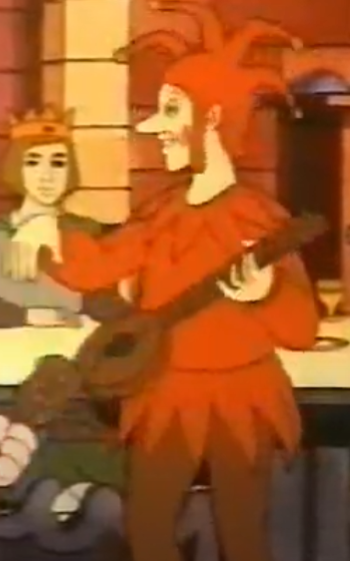

A continuación se muestran listados de algunos de los elementos culturales más representativos. Estos van desde cuentos infantiles y las canciones más antiguas, hasta los elementos de interés turístico más comunes. Las entidades de cada elemento han sido seleccionadas en función de tres criterios:
La música está presente en nuestra cultura desde hace al menos 995 años. En aquel entonces existía un reino a orillas del Mediterráneo francés conocido como Provenza, del cual partieron hacia diferentes partes de Europa los primeros músicos (en aquel entonces conocidos como juglares), quienes siglos más tarde dieron lugar a los primeros grupos de música. Estos juglares amenizaban las celebraciones de la nobleza feudal hacia el año 1030 d.C.
En primer lugar se muestra un listado con musica ordenada desde más antigua hasta más moderna, despues en orden inverso
Canciones autoctonas ordenadas desde las más antiguas hasta las más modernas (algunas de ellas recopiladas en el libro:Romancer popular de la terra catalana)
Lista al derecho 🔻🔺
Don Joan y Don Ramon ò Les 29 llançades: Esta canción cuenta como los nobles se preparaban para la guerra desde pequeños, mediante 2 hermanos
La filla del Rey de França y Lo richom aragonès: Esta canción habla sobre una celebración y un matrimonio arreglado
Blancaflor ò La tornada del marit: Esta canción habla sobre un marinero casado y esta ambientada a los tiempos en lso que el Mar Mediterraneo era una via de comercio
Llibre Vermell de Montserrat: Recopilación de canciones devocionales y danzas para los peregrinos que visitaban el monasterio del siglo XIV
El Roser: La canción está relacionada con festividades religiosas, especialmente con la Virgen del Rosario (La Mare de Déu del Roser), una figura muy venerada en la tradición católica catalana ambientada en pleno barroco
El cant de batre Estas canciones populares eran cantadas durante las jornadas de trabajo durante el clasicismo o s. XVIII
Sardanas Musica enfocada a los bailes durante fiestas locales que empezarón durante el romanticismo en el siglo XIX
El Gegant del Pí: Esta canción que data incluso desde la creación de los primeros condados, pasa a ser popular e infantil aparecen muscios como Lluis Llach durante la acutalidad
Oques Grasses, La Pegatina: Música electrónica y fusión catalana, apartir de los 2000 la musica da un fuerte buelco hacia el volumen en detrimento del contenido
Las Pruebas de Hercules: En laa ctualidad pocos estilos musicales estan enfocados a temas culturales y solo grupos como Blind Guardians, o musicos como Bob Dylan hablan de ciertas tematicas
Lista al rebes 🔺🔻
Don Joan y Don Ramon ò Les 29 llançades: Esta canción cuenta como los nobles se preparaban para la guerra desde pequeños, mediante 2 hermanos
La filla del Rey de França y Lo richom aragonès: Esta canción habla sobre una celebración y un matrimonio arreglado
Blancaflor ò La tornada del marit: Esta canción habla sobre un marinero casado y esta ambientada a los tiempos en lso que el Mar Mediterraneo era una via de comercio
Llibre Vermell de Montserrat: Recopilación de canciones devocionales y danzas para los peregrinos que visitaban el monasterio del siglo XIV
El Roser: La canción está relacionada con festividades religiosas, especialmente con la Virgen del Rosario (La Mare de Déu del Roser), una figura muy venerada en la tradición católica catalana ambientada en pleno barroco
El cant de batre Estas canciones populares eran cantadas durante las jornadas de trabajo durante el clasicismo o s. XVIII
Sardanas Musica enfocada a los bailes durante fiestas locales que empezarón durante el romanticismo en el siglo XIX
El Gegant del Pí: Esta canción que data incluso desde la creación de los primeros condados, pasa a ser popular e infantil aparecen muscios como Lluis Llach durante la acutalidad
Oques Grasses, La Pegatina: Música electrónica y fusión catalana, apartir de los 2000 la musica da un fuerte buelco hacia el volumen en detrimento del contenido
Las Pruebas de Hercules: En laa ctualidad pocos estilos musicales estan enfocados a temas culturales y solo grupos como Blind Guardians, o musicos como Bob Dylan hablan de ciertas tematicas

🗼Arquitectura🗼
Basilica de Santa Maria del Mar: También conocida como la catedral de los marineros, fue una de las primeras construcciones en dejar atrás la arquitectura romana. Construida en Barcelona, fue enteramente hecha por gente que vivía del mar. También es famosa por la cantidad de años que necesitó para ser terminada.
Sagrada Familia: Una de las dos basílicas de la ciudad condal. Esta fue diseñada por Antoni Gaudí, aún sigue en construcción, pero se puede visitar por turistas, siendo un activo turístico muy importante.
Parque Güell: Fue un encargo del empresario Eusebi Güell y diseñado por Antoni Gaudí. Pasó a ser un parque público en 1926.
Berenguer de Montagut
Antoni Gaudí
♈♊♌♎♐♒♉♋♍♏♑♓♈♊♌♎♐♒♉♋♍♏♑♓♈♊♌♎♐♒♉♋♍♏♑♓♈♊♌♎♐♒♉♋♍♏♑♓
♈ Top 12 tradiciones autoctonas ♈
♈El Ball de Bastons: Esta tradición artística surgió de forma simultánea en toda Catalunya, se remonta al siglo XII y se considera de origen combativo. En ella, los participantes golpean el suelo con bastones de madera al ritmo de la música.
♊Correfocs: Esta tradición festiva surge durante el siglo XII, a raíz de diferentes danzas medievales en las que se requería el uso del fuego. En ella, los participantes se persiguen entre sí, simulando demonios que intentan atrapar al personal.
♌Gegants i Capgrossos: Esta tradición de origen representativo nació a finales del medievo (durante el siglo XIV), de forma simultánea en toda Catalunya. En las fiestas locales, los participantes desfilan moviendo estas representaciones, que representan a la nobleza y personajes históricos.
♎La Patum de Berga: Esta tradición representativa se originó en el pueblo de Berga y nació en el siglo XIV. Está declarada como Patrimonio Inmaterial de la UNESCO desde 2005. En ella se combinan: fuego, música, figuras míticas de otras fiestas y tambores.
♐Els Tres Tombs: Esta tradición de reconocimiento a Sant Antoni Abad nació en Igualada y también se remonta al siglo XIV. En ella, se realiza un recorrido a caballo por las calles bendiciendo a los animales.
♒La Diada de Sant Jordi: Esta tradición de carácter cultural nació de forma conjunta en toda Catalunya durante el siglo XV. En ella, las mujeres reciben de regalo una rosa y ellas regalan un libro, simbolizando el amor que el caballero Sant Jordi demostró a una princesa al salvarla de un dragón.
♉El Caga Tió: Esta tradición de origen navideño nació de forma simultánea en toda Catalunya aproximadamente durante el siglo XV. En ella, se golpea un tronco esperando que este saque regalos.
♋Els Castells: Esta tradición festiva apareció por primera vez en Tarragona a finales del siglo XVIII. Consiste en hacer torres humanas donde, por orden de peso y altura, los participantes se suben unos encima de otros. Los castells son una representación de las virtudes: fuerza, equilibrio, valor y razón. Están declarados como Patrimonio Inmaterial de la UNESCO desde 2010.
♍El Pa amb Tomàquet: Esta tradición gastronómica nació en las zonas rurales de toda Catalunya en el siglo XVIII. La gente prepara un alimento elaborado a raíz del cultivo, que consiste en pan al que se le unta tomate.
♏La Sardana: Esta tradición musical se remonta a la región del Empordà durante el siglo XIX. Se baila formando círculos con personas cogidas de las manos. No está reconocida por la UNESCO, pero también es un símbolo de: unidad, igualdad e identidad.
♑Els Pastorets: Esta tradición satírica nació en los pueblos catalanes durante el siglo XIX. En ella, los participantes representan un fenómeno religioso.
♓La Rumba Catalana: Esta tradición de origen gitano nació en la década de 1950-1960 en Barcelona. Es un género musical que mezcla flamenco, música caribeña y rock and roll, y se utiliza de manera nativa en las fiestas populares.